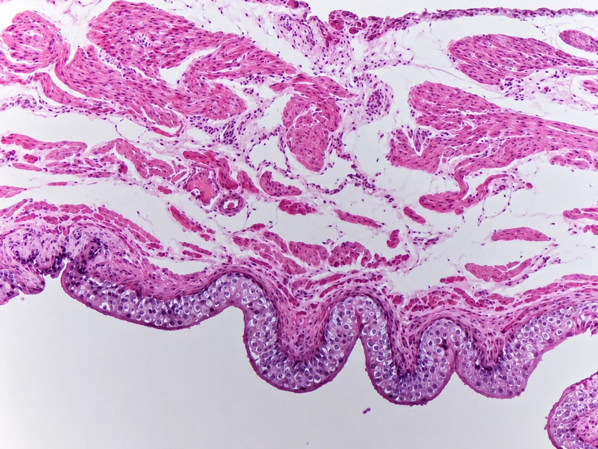
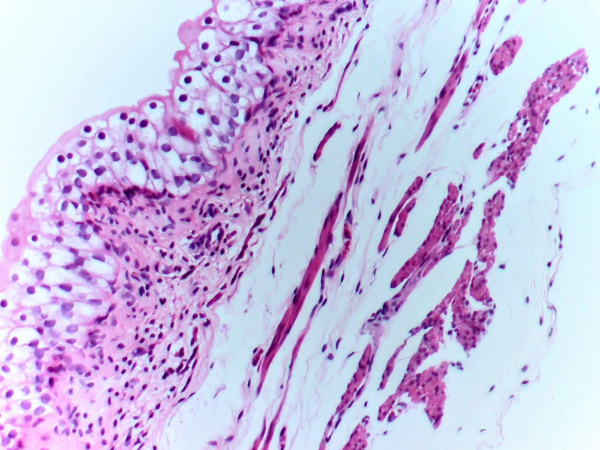
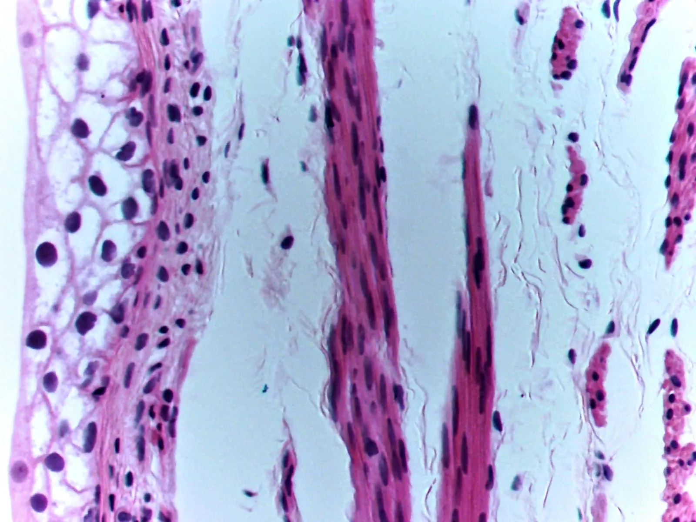
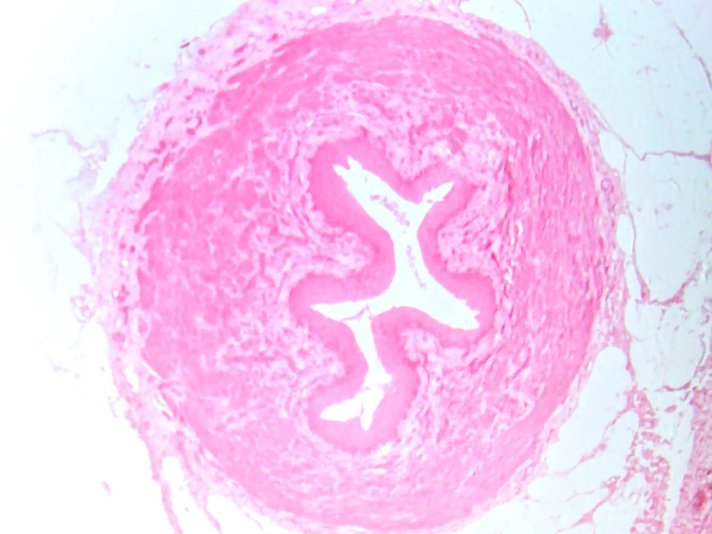
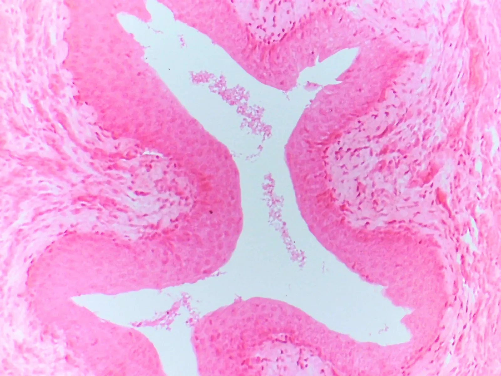

Lâmina 65 e 66 · Sistema urinário
Bexiga urinária e ureter





Toque na imagem para ampliar. No computador, use as setas do teclado para trocar de imagem.
Lâmina 65 e 66 · Sistema urinário





Toque na imagem para ampliar. No computador, use as setas do teclado para trocar de imagem.